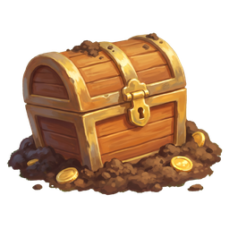
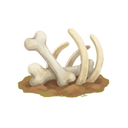

device:
iPhone
iPad P
iPad L
Desktop
tunnel.html — tier-1 fox tunnel
Garden tunnels
rotate the tiles so the animals can get out to play and back home safely
🔊
🏠 above
Close ×
Drag to look around. Tap a tile to turn it.
Building the tunnels…


Ready to dig?
Rotate the soil tiles so the animals can find their way out to play — and home again safely.
Ready!
Tunnels connected!
The animals are out playing in the garden.
Done — back to centre
Play again
Try again